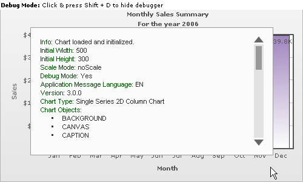
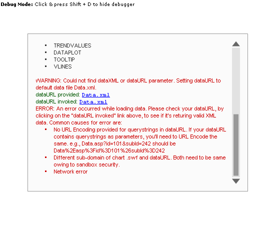
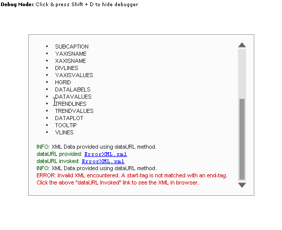
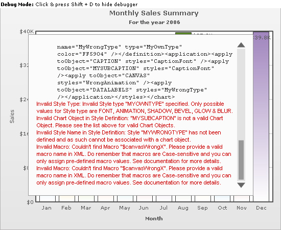

Debug Mode (Window) |
The debug mode is a new concept introduced in FusionCharts v3. It helps you look into what is happening behind the chart scenes. It also lists out any errors, if present. You can use the debug window to trouble shoot all your charts. The debug window lists errors like:
In each FusionCharts v3 chart, you can activate the debug mode by just enabling the debug flag. A typical debug window for a chart that rendered successfully using dataURL method looks as under: |
|  |
| Here, you can see a Column 2D Chart with its Debug Window. The Debug Window contains a lot of information about the chart. The contents of the above debug window can be listed as under: |
Info: Chart loaded and initialized.
INFO: XML Data provided using dataURL method. |
From the above Debug Window, you can get the following information:
To hide the debug window and see the chart below, in Debug Mode, you can click inside the respective chart and then press Shift + D. To show it back, again press Shift + D. |
| Enabling the debug Mode |
| To enable the debug mode for any of your charts, you just need to set the debugMode flag to 1. If you're using direct HTML embedding mode, you can provide it as under: |
| <object classid="clsid:d27cdb6e-ae6d-11cf-96b8-444553540000"
codebase="http://fpdownload.macromedia.com/pub/shockwave/cabs/flash/swflash.cab#version=8,0,0,0"
width="500" height="300" id="Column2D" > <param name="movie" value="../FusionCharts/Column2D.swf" /> <param name="FlashVars" value="&dataURL=Data.xml&debugMode=1"> <param name="quality" value="high" /> <embed src="../FusionCharts/Column2D.swf" flashVars="&dataURL=Data.xml&debugMode=1" quality="high" width="500" height="300" name="Column2D" type="application/x-shockwave-flash" pluginspage="http://www.macromedia.com/go/getflashplayer" /> </object> |
| Or, if you're using FusionCharts JavaScript class, you can set the debugMode flag to 1 as under: |
| <div id="chartdiv" align="center">The
chart will appear within this DIV. This text will be replaced by the chart.</div> <script type="text/javascript"> var myChart = new FusionCharts("../FusionCharts/Column2D.swf", "myChartId", "600", "300", "1", "0"); myChart.setDataURL("Data.xml"); myChart.render("chartdiv"); </script> |
The parameter after chart width and height is the debugMode flag. Set it to 1, and run the chart. You'll now see it with Debug Window. Use the debug window when building the chart. Once the chart runs fine, set the flag back to 0, so that your end users just see the chart and not the debug window. Note: Debug Mode error won't help you solve problems relating to path of SWF file, as the debug mode is a module inside the chart SWF file. So, unless the SWF file path is correct, you cannot switch debug mode on. Shown below are a few example errors show in debug mode: |
| dataURL and dataXML missing |
|  |
In this chart, we've:
|
| Invalid XML Provided |
| In this example, we provide invalid XML to the chart. We've intentionally not closed one of our <set> elements. The entire XML is listed below: |
| <chart caption='Monthly Sales Summary'
subcaption='For the year 2006' xAxisName='Month' yAxisName='Sales' numberPrefix='$'> <set label='Jan' value='17400' /> <set label='Feb' value='19800' /> <set label='Mar' value='21800' /> <set label='Apr' value='23800' > <set label='May' value='29600' /> <set label='Jun' value='27600' /> <set label='Jul' value='31800' /> <set label='Aug' value='39700' /> <set label='Sep' value='37800' /> <set label='Oct' value='21900' /> <set label='Nov' value='32900' /> <set label='Dec' value='39800' /> </chart> |
| When you run your chart against this XML, you'll get an "Invalid XML Data" message on the chart and the debug window would look as under: |
|  |
You can see the reason for Invalid XML data above. FusionCharts detects it for you and then shows the appropriate message. To get more information on error, you can click the dataURL Invoked link and open the XML file in browser. |
| Invalid STYLE definition Errors |
FusionCharts Debug Window can also capture the following errors in your STYLE definitions:
Let's consider the XML example below. Errors in style XML are represented in bold: |
| <chart caption='Monthly Sales Summary'
subcaption='For the year 2006' xAxisName='Month' yAxisName='Sales' numberPrefix='$'> <set label='Jan' value='17400' /> <set label='Feb' value='19800' /> <set label='Mar' value='21800' /> <set label='Apr' value='23800' /> <set label='May' value='29600' /> <set label='Jun' value='27600' /> <set label='Jul' value='31800' /> <set label='Aug' value='39700' /> <set label='Sep' value='37800' /> <set label='Oct' value='21900' /> <set label='Nov' value='32900' /> <set label='Dec' value='39800' /> <styles> |
Here, we've the following errors in style XML:
When you run a chart against this XML, you'll see the following errors raised in debug mode: |
|  |
As you can see, all our errors got caught in the Debug Window and now you can use this effectively to correct your style XML. There are more errors and messages that debug window can trap, which we've not shown here. Examples: when you update your chart's data at client using AJAX, all transfer messages are logged so that you easily debug into the application process. The Debug Window is aimed at making your lives simpler as developers. |